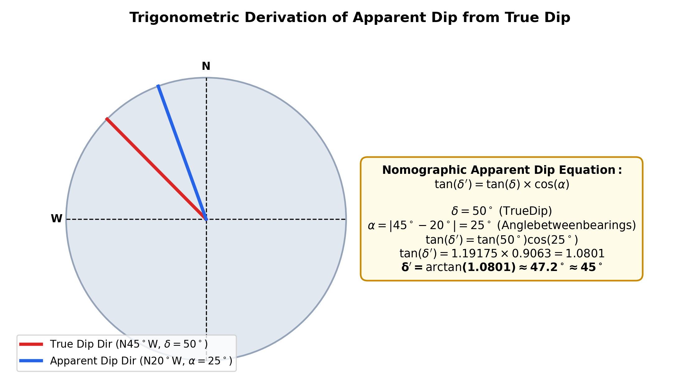
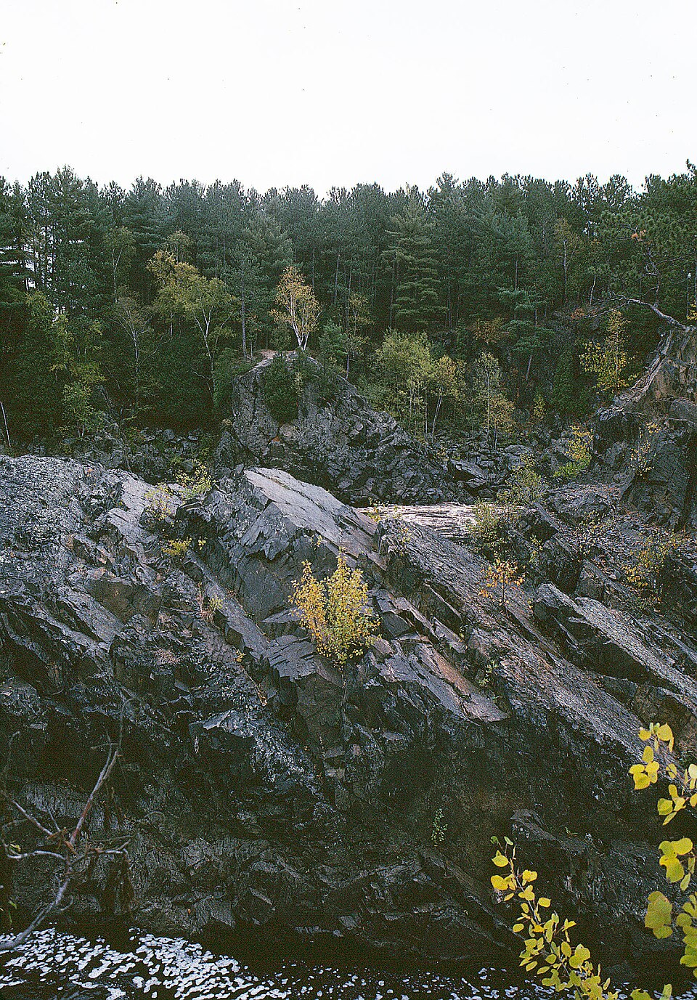
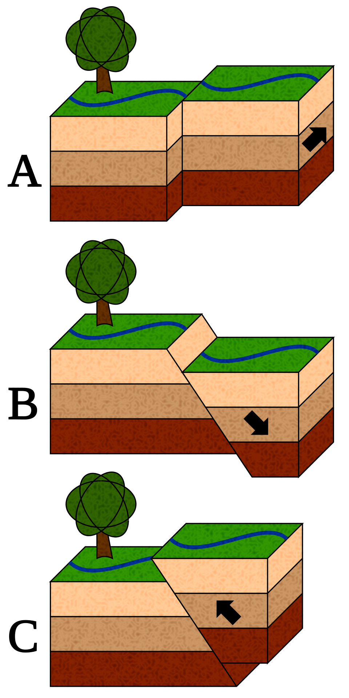
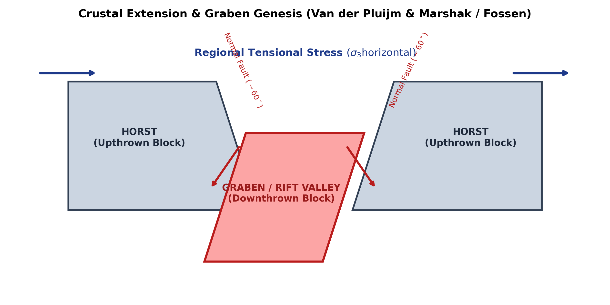
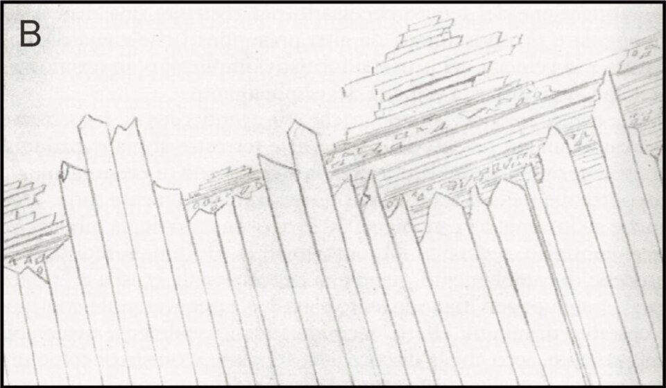
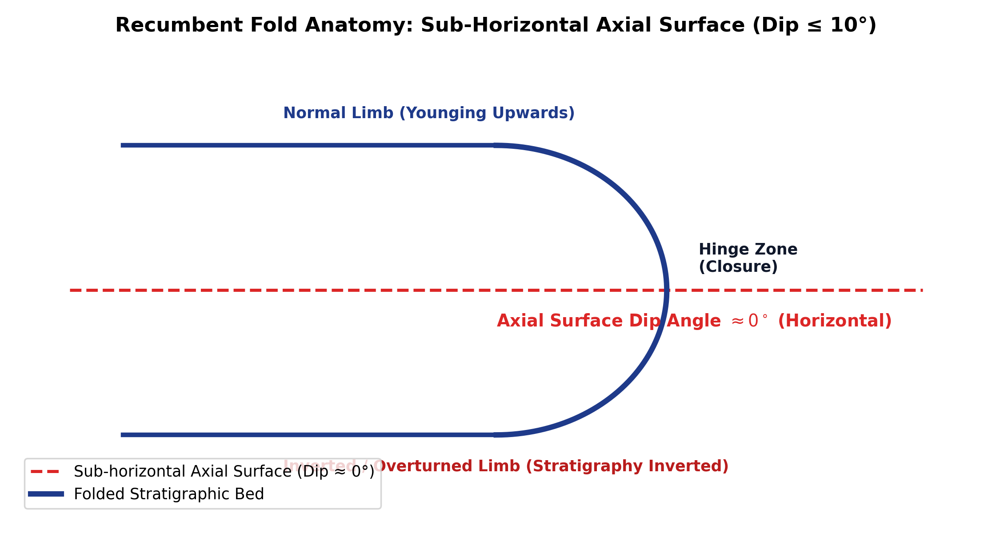
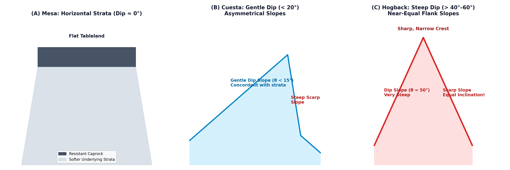
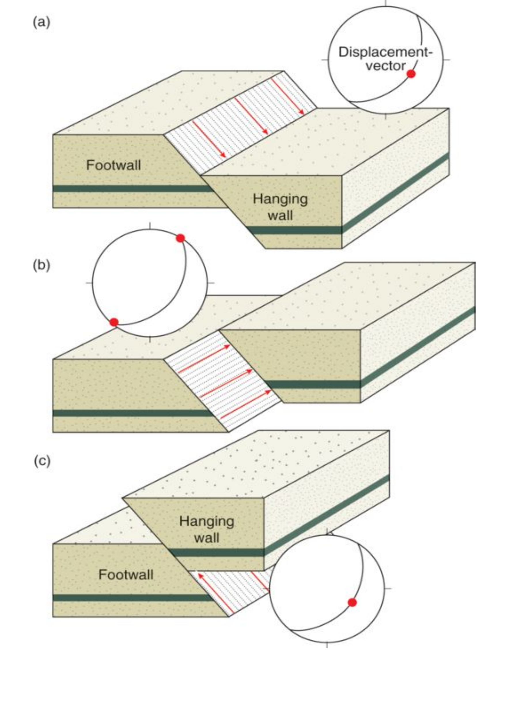
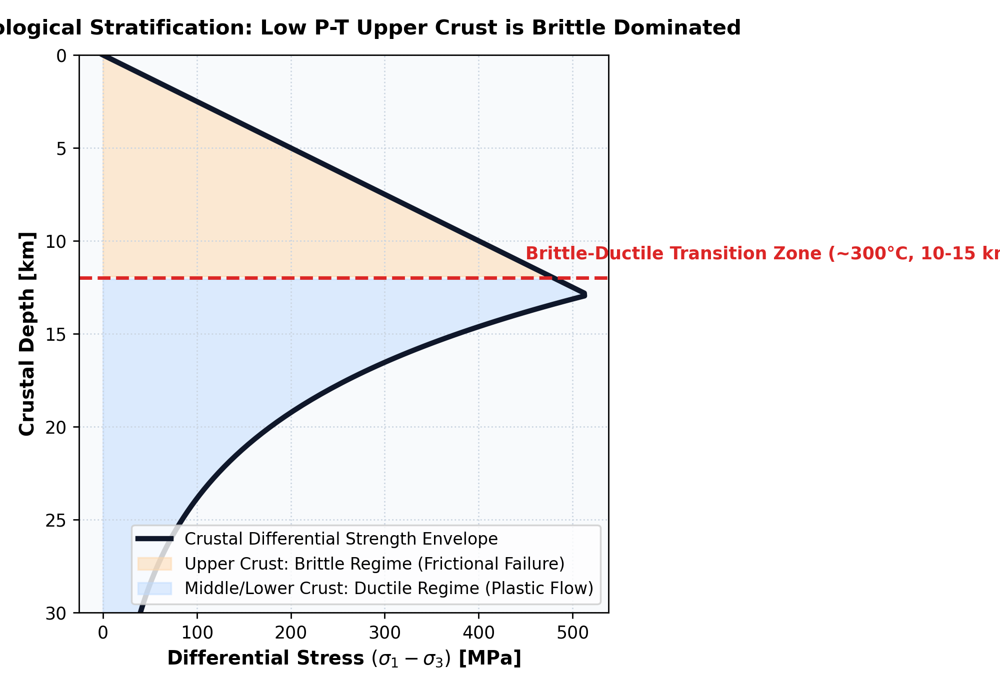

7.1 Dip and Strike

$$\tan \alpha = \tan \theta \cos \beta$$
By Anderson's faulting theory, conjugate shear faults form at $\theta_f = 45^\circ - \phi/2 \approx 30^\circ$ to the maximum principal compressive stress $\sigma_1$.
Undisturbed sedimentary rocks are originally deposited as horizontal layers, but tectonic forces tilt, fold, and fracture them. The spatial attitude of any inclined stratum, fault plane, or foliation is defined by its Dip and Strike:
Dip. The maximum angle of inclination of a rock bed with the horizontal plane, measured in a vertical plane perpendicular to the strike. It comprises both the amount of dip ($0^\circ\text{ to }90^\circ$) and the direction of dip. Any dip measured in a direction other than the true dip direction is called an Apparent Dip, which is always smaller than the true dip.
Strike. The geographic direction (bearing) of a horizontal line formed by the intersection of an inclined rock bed with an imaginary horizontal plane. Strike is always perpendicular ($90^\circ$) to the true dip direction and is measured with a Clinometer or Brunton compass.
7.2 Folds



Folds are wavy undulations or bends developed in rock strata under regional compressional tectonic stresses within the Earth's crust.
Elements of a Fold. Limbs (the two sloping sides of a fold), Axial Plane (an imaginary plane bisecting the fold symmetrically between its limbs), Axis / Hinge Line (the line of maximum curvature where the axial plane intersects a folded bed), Plunge (the angle of inclination of a fold axis with the horizontal), Crest (highest line of an arch), and Trough (lowest line of a trough).
Anticline and Syncline. An Anticline is an up-arched fold whose limbs dip away from the axial plane and whose core exposes the oldest beds. A Syncline is a down-arched trough whose limbs dip toward each other and whose core preserves the youngest beds.
Types of Folds. Symmetrical Fold (vertical axial plane, equal limb dips), Asymmetrical Fold (inclined axial plane, unequal limb dips), Overturned Fold (both limbs dip in the same direction, one limb inverted), Recumbent Fold (axial plane is nearly horizontal), Isoclinal Fold (parallel limbs dipping equally), Chevron / Zig-Zag Fold (sharp angular hinges), Plunging Fold (fold axis inclined, producing V-shaped outcrops), Dome and Basin (circular or elliptical up-folds and down-folds), and Anticlinorium / Synclinorium (mega-folds with superimposed minor folds).
Field Recognition of Folds. Folds are identified in the field by: (i) repetition of rock beds in reverse symmetrical order across the axial trace, (ii) reversal of dip directions, (iii) V-shaped outcrop closures in plunging folds, and (iv) drag folds and axial-plane cleavage.
7.3 Faults



Faults are fractures along which the adjacent rock blocks have suffered measurable relative displacement parallel to the fracture surface.
- Mohr-Coulomb Criterion & Byerlee's Law: Brittle shear failure occurs when shear stress $\tau$ satisfies $\tau = c + \sigma_n \tan\phi$ (where $c$ = cohesion, $\phi \approx 30^\circ$ = angle of internal friction). Along pre-existing fractures ($c \approx 0$), sliding obeys Byerlee's Law ($\mu_s \approx 0.6\text{--}0.85$).
- Ramsay Dip-Isogon Fold Classification: Class 1B (Parallel/Concentric) maintains constant orthogonal bed thickness ($t_\alpha = t_0$); Class 2 (Similar) maintains constant axial-planar thickness ($T_\alpha = T_0$) via ductile flow toward hinges.
Fault Terminology. Fault Plane (fracture surface of movement), Dip and Hade (inclination measured from horizontal vs. vertical: $\text{Dip} + \text{Hade} = 90^\circ$), Hanging Wall (rock block lying above an inclined fault plane), Footwall (rock block lying below the fault plane), Throw (vertical component of displacement), Heave (horizontal component), and Net Slip.
Genetic & Geometric Classification. Normal (Gravity) Fault: Hanging wall moves downward relative to the footwall under crustal tension. Parallel normal faults produce uplifted Horsts and downdropped Grabens (Rift Valleys) (e.g., Narmada and Rhine grabens). Reverse Fault: Hanging wall moves upward over the footwall under horizontal compression. A low-angle reverse fault ($\text{dip} < 45^\circ$) is a Thrust Fault, and an extensive sub-horizontal overthrust sheet ($>5\text{ km}$ travel) is a Nappe. Strike-Slip (Wrench/Tear) Fault: Displacement is purely horizontal parallel to fault strike.
Field Recognition of Faults. Evidenced by: (i) abrupt truncation, repetition, or omission of strata, (ii) polished striated surfaces (slickensides), (iii) crushed fault breccia and pulverized clay-like fault gouge, (iv) drag bending of beds near the fault, and (v) topographic fault scarps and aligned springs.
7.4 Joints and Unconformities


Joints. Fractures or cracks in rock masses along which no perceptible relative displacement has occurred. Classified genetically into Tension Joints (cooling columnar joints in basalt, unloading sheet joints in granite) and Shear Joints (conjugate sets formed during folding/faulting). Joints strongly govern rock permeability, blasting efficiency, and slope stability.
Unconformities. A buried surface of erosion or non-deposition separating younger strata above from older rocks below, representing a major hiatus in geological time:
(i) Angular Unconformity. Younger horizontal beds rest upon eroded, tilted, or folded older strata.
(ii) Disconformity. Parallel sedimentary beds separated by an irregular erosion surface.
(iii) Nonconformity. Sedimentary strata deposited directly upon an eroded basement of igneous or metamorphic rocks.
Inliers and Outliers. An Outlier is an isolated patch of younger rock surrounded by older rocks (erosional remnant), whereas an Inlier is an area of older rock exposed inside younger surrounding strata (e.g., eroded anticlinal crest or tectonic window).
Chapter Review Questions (K. M. Bangar)
1. Define dip, apparent dip, and strike. How are they measured in the field using a Brunton compass?
2. Describe the parts of a fold and classify folds into symmetrical, asymmetrical, overturned, recumbent, isoclinal, and plunging types.
3. Define a fault. Describe normal, reverse, thrust, and strike-slip faults, horst, graben, and how faults are recognized in the field.
4. What are joints and unconformities? Distinguish between angular unconformity, disconformity, and nonconformity.
Visual Reference Gallery (Clean Color Diagrams & Specimens)
Supplementary full-color diagrams from Winter, Perkins, Fossen, Boggs and high-resolution USGS/Wikimedia photographs replacing scanned textbook drawings.






